Material Components
Material components can be customized by the data fed within the Animaze Editor's Material Editor (changing the diffuse texture, setting a tint color etc.). All components that can be changed only from the Animaze Editor are marked accordingly by (*).
Selecting an item’s mesh in the Hierarchy Panel, will display the material properties and components in the Editor Panel.
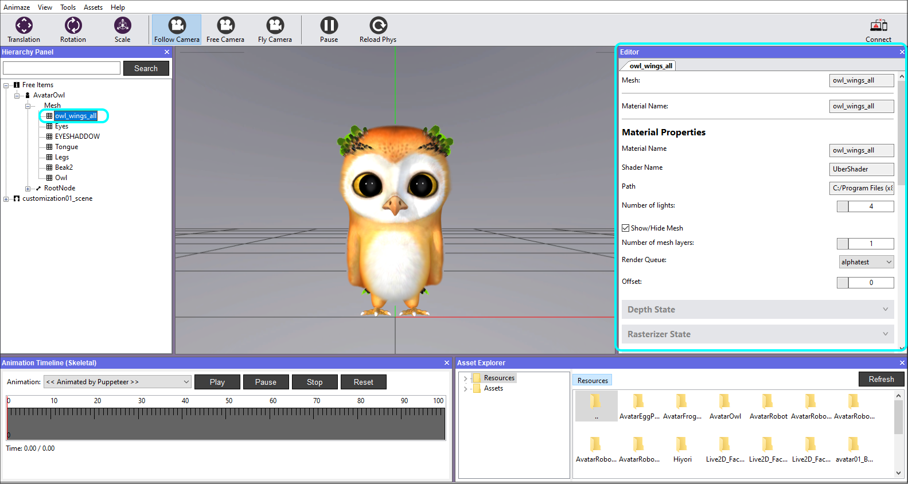
Warning!
There are currently two main restrictions regarding Materials in Animaze:
- The mesh can only feature a single material
- The mesh needs to be exported with a single UV set
The current AnimazeShader supports the following Material Components:
Diffuse
Applies diffuse color to the rendered surface based on a provided texture.
Requirements:
- diffuse texture – RGBA texture. The diffuse texture holds diffuse color info of the rendered surface stored in RGB channels. Alpha channel is used to specify transparency, 0 (black) areas for full transparency and towards 255 (white) surfaces get increasingly opaque.
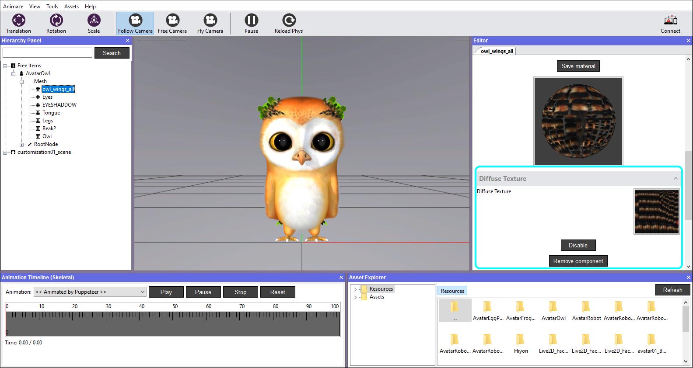
Tangent Space Normal Mapping
Applies normal mapping to the rendered surface based on the provided texture. For the best results, we recommend baking the normal map in a software that is compatible with Autodesk (i.e. Mudbox, Maya, Substance).
Requirements:
- normal map texture – RGB texture. The texture holds normal map info stored in Tangent (or texture) space.
- geometry exported with Normals info
We recommend baking the normal map after exporting the .fbx file from the software you are working with, so that the UV maps do not get overwritten.
The details present in normal maps are static: for now, they cannot be dynamically altered at run- time. If you want dynamic things like expression wrinkles that appear/disappear based on expression changes, don’t put them in the tangent space normal maps.
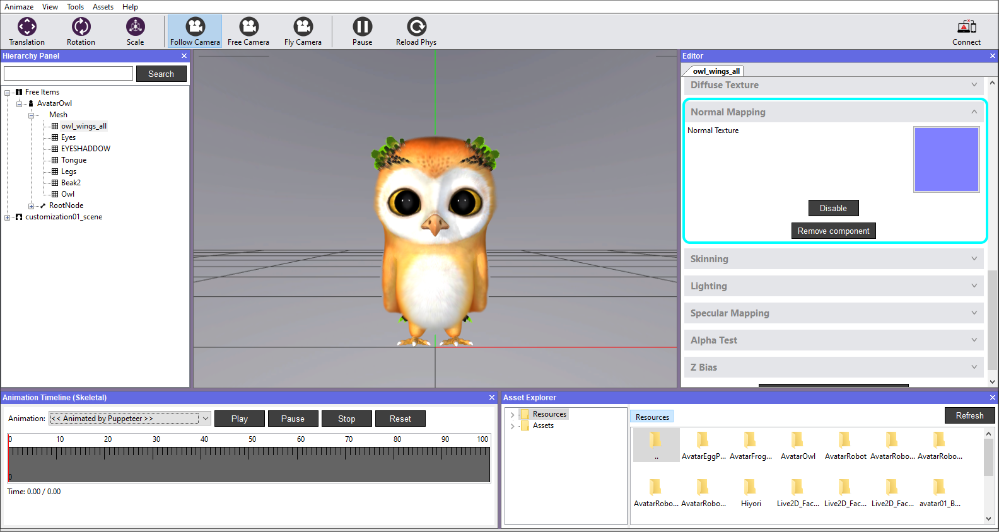
Environment Mapping
The AnimazeShader maps an environment texture (the Skybox) to the mesh surface. The Environment texture is provided by Animaze System, specifically the Skybox item cube texture.
Requirements:
- geometry exported with Normals info
- Specular Map Texture – RGBA texture. The Environment mapping uses the Green Channel from the Specular Map texture as an intensity factor; lower values make the surface unreflective, while higher values make the surface more reflective. The Green Channel can also be interpreted as metalness.
- (*) Environment Multiplier – float value. A multiplier that can boost the intensity of the environment reflected on the surface.
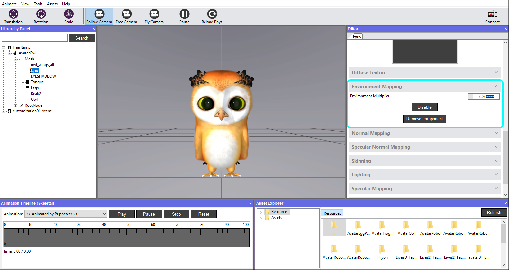
Skinning
Animaze does all the skeletal animation skinning on the GPU. This component informs the Animaze system to add skeletal animation to the item in question.
Requirements:
- The geometry needs to hold skinning information. Vertex weights are capped to 4 influences.
If there are more than 4, then the extra influences will be detected at import in Animaze Editor and will redistribute them automatically. This can lead to an unwanted edgy result of the geometry, so we recommend to limit the influences to 4 per vertex.
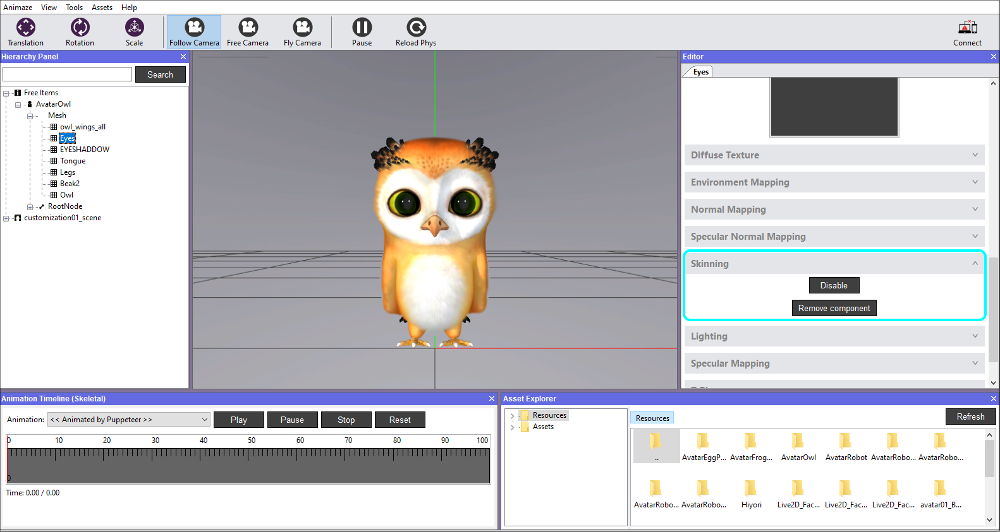
Lighting
Adds lighting to the rendered model. Removing this component results in a pre-lit or unlit model that displays the diffuse texture (if the Diffuse component is added) without any shading changes.
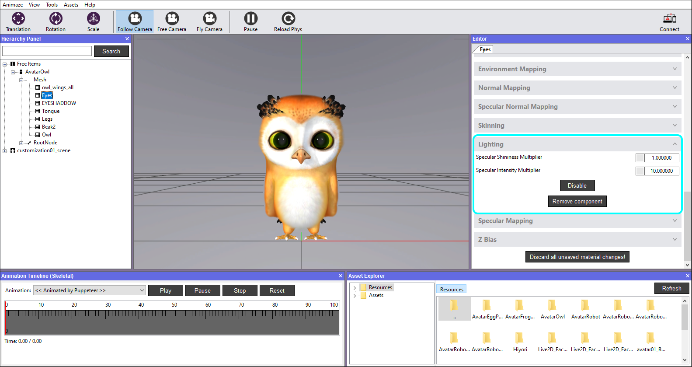
The AnimazeShader supports a maximum of 4 lights of any type: directional or omni.
Requirements:
- geometry exported with Normals info
- geometry exported with Tangent or Binormal info
- Specular Map Texture – RGBA texture. The specular map uses two channels to customize the specular behavior on the surfaces.
- Red Channel holds the specular exponent info (also known as shininess or glossiness), so it controls how blurry or sharp the specular shine is rendered. Higher values make the shine small and sharp, while lower values make the shine large and blurry.
- Green Channel holds the specular intensity info, where 0 means no specular shine, while 255 is max shine intensity.
- Blue Channel holds the emissive intensity information, lower the values, less emissive and more influenced by lighting, higher values, more emissive.
- Alpha Channel is reserved for other components.
Specular Mapping
The specular mapping is a component that can fine control the specular reflection on a rendered surface.
Requirements:
- Specular Map texture – RGBA texture. The specular map uses two channels to customize the specular behavior on the surfaces:
*Red channel holds the specular exponent info (also known as shininess or glossiness), so it controls how blurry or sharp the specular shine is rendered:
- higher values make the shine small and sharp
- lower values make the shine large and blurry
*Green channel holds the specular intensity info:
- 0 means no specular shine
- 255 is max shine intensity
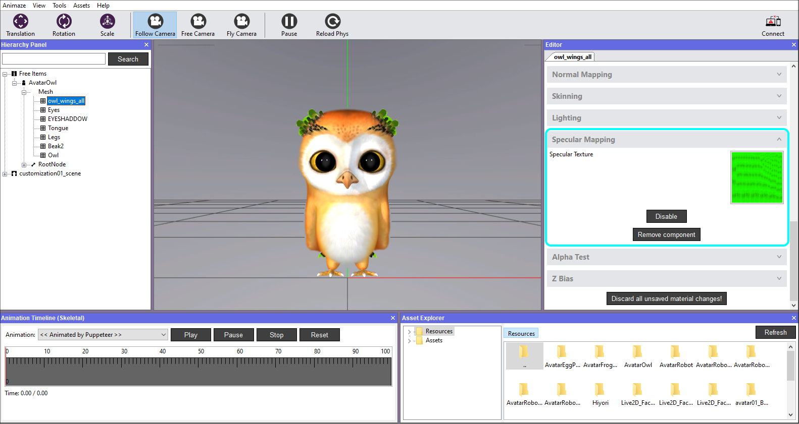
`Emissive – as part of Specular component
Adds the emissive component to the surface shading. The Emissive just boosts up the diffuse color based on the specular map blue channel.
Requirements:
- Specular Map Texture – RGBA texture
*Blue Channel holds the emissive intensity information:
- lower the values >> less emissive and more influenced by lighting
- higher values >> more emissive
Bekmann Specular
The Animaze shader provides two types of specular highlight models: the classic Blinn-Phong distribution and the Beckmann distribution. The Beckmann specular is used in combination with Subsurface Scattering and Translucency components, to better approximate how light refracts, scatters and reflects on the skin-like surfaces, but it is not limited to that.
Requirements:
- Roughness - float value - a parameter between 0 and 1 measuring the surface roughness. Small values are shinier, larger values are rougher.
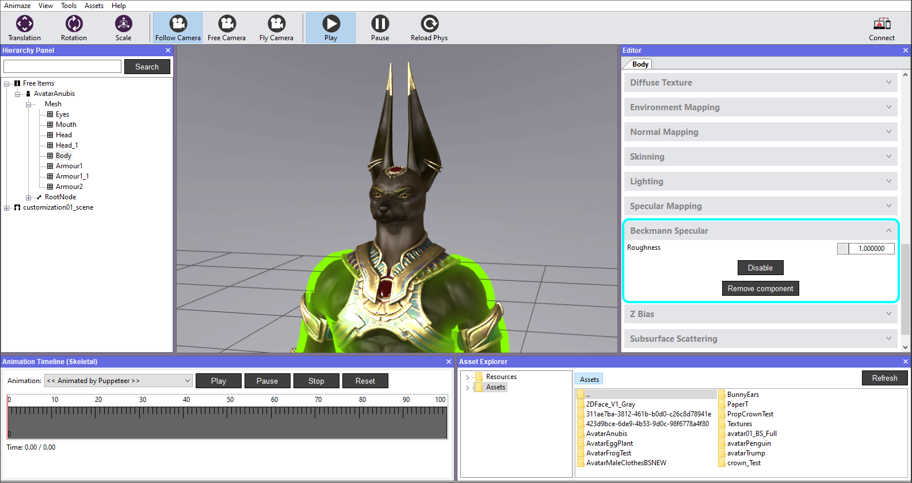
Translucency
The translucency component simulates the light going through the shaded object. It is used in the shading of skin or skin-like materials in combination with Subsurface Scattering and Bekmann specular, to better approximate how light refracts, scatters and reflects on the surface.
Requirements:
A map obtained either through bake process or manually painted.
- AO (ambient occlusion map) with inverted normals through baking (to obtain the thickness of the model) or manually painted
- white areas > the light passes through easier
- dark areas > the light passes through harder
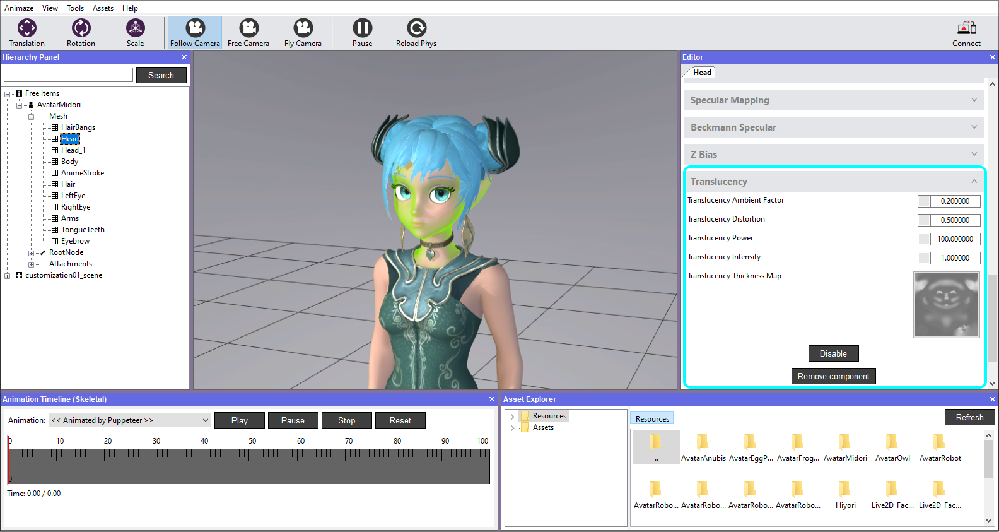
Subsurface Scatering - SSS
Subsurface scattering is necessary for the rendering of materials such as skin and flesh. If subsurface scattering is not used, the material may look unnatural, like plastic or metal. This component works by simulating how light penetrates a translucent surface like a grape for instance, and is absorbed and scattered and exits the surface at a different location. When light rays are traveling and hit a surface there are many different things that occur all at once. Some of the light is going to be reflected off, giving specular light.
However, with certain materials that have a level of translucency some of the light rays are actually going to be absorbed into the surface. Once inside, the light rays will scatter all around and exit the surface at different locations, providing subsurface scattering.
The Animaze Shader is capable of emulating skin and flesh, for a more natural look of the model.
Requirements
- scatter texture RGB:
- Red channel – range of sub surface scattering
- 0 value is for no subsurface scattering
- 255 max subsurface scattering. Should fade towards 0 on mapping seams and on solid details such as piercings/jewelry.
- Green channel – direct light attenuation
- 0 means no direct light (only ambient and radiosity)
- 255 full direct light intensity.
- Blue channel
- 0 value means that the amount of light bounces right off, it does not pass through the surface
- 255 max value means that the light scatters deep in the skin
The value should fade towards 0 on mapping seams and on solid details such as piercings/jewelry. The UV maps must be unique within 0-1 range, and the materials mustn’t overlap.
Tint Color
Material component that tints the rendered surface with a certain color.
Requirements:
- (*) Tint Color RGBA, where RGB tints the surface and Alpha makes the surface transparent.
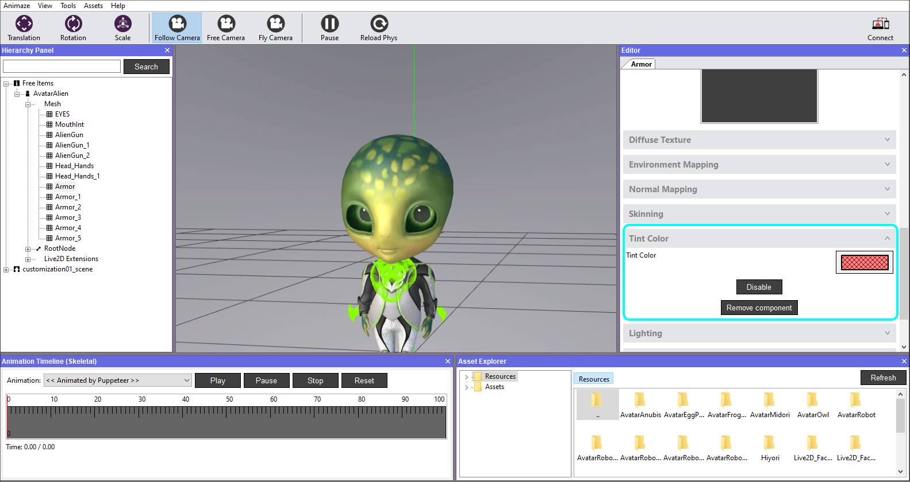
Alpha Test
This component discards any pixels under a certain alpha value. Alpha test is done just after computing the diffuse color.
Requirements:
- (*) Alpha Test reference value – float value
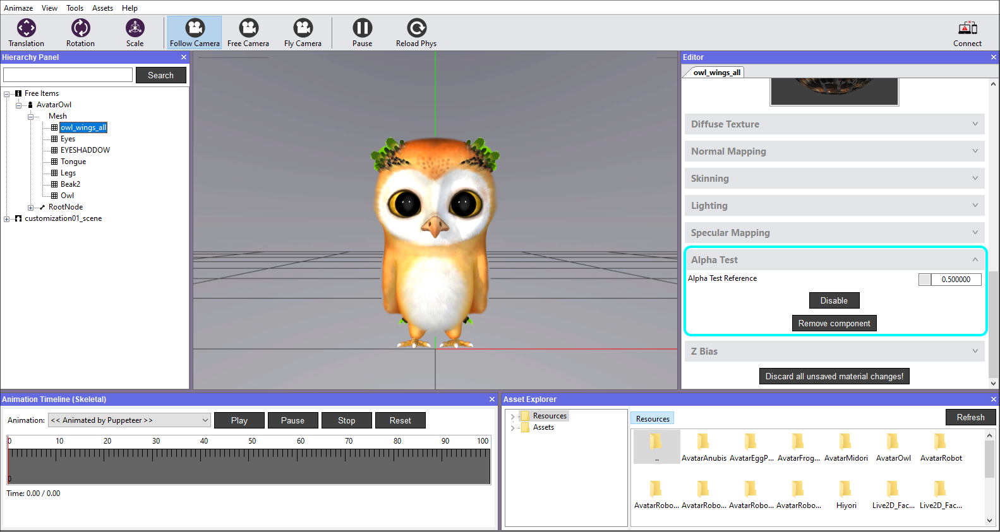
Fur
The Fur component renders the model in layers, creating the effect of a furry surface; it can be attained for short fur effects only.
The component makes use of the Normals and vertex color geometry info to compute a general fur direction, where the vertex Red and Green channels give the direction in the Tangent and Binormal space, and the Alpha channel is used as a factor for the fur length.
Furthermore, a surface can have areas without any fur or with shorter fur. This aspect can be controlled using a fur texture mask.
Other options that control the quality of the fur rendering are: fur length, number of fur layers and a global fur direction multiplier.
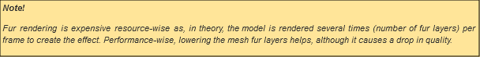
Asset Requirements
-
geometry exported with Normals info
-
geometry exported with Vertex Color info
-
Red and Green Channel represents a direction in Tangent and Binormal plane.
-
Alpha Chanel is a fur length factor
-
-
diffuse texture – RGBA texture
-
Fur Mask
-
Red channel controls the mix between normal specular and aniso specular
-
0 is normal
-
255 is specular
-
-
Green channel is an additional layer alpha control. Alpha is the length, all lower value pixels are discarded, everything above will render at a calculated opacity, the green channel adds an additional transparency control.
-
Blue channel is the fur aniso specular intensity
-
Alpha Channel is used as fur length, controlling a smoother blend between fur areas (values closer to 255) and furless areas (values closer to 0) of the rendered surface.
-
Material options
-
Fur Direction Multiplier - helps you with emphasizing or downplaying the Fur Direction in your Animaze fur materials.
-
The fur direction is read from vertex color info, to compute a general fur direction. It is being expressed in Tangent Space. The Red and Green vertex color channel values are used to perceptually “bend” the fur on the Tangent and Binormal axis respectively.
-
You can change the fur direction by changing the values in the red and green channels in the vertices’ color component, and then you can amplify or downplay this established direction via the numeric value of the fur direction multiplier (it can also be negative to go in the opposite way).
-
-
Fur Length - value expressed in model space scale, controls the maximum fur length. Smaller values (0.01 for a 0.7m avatar) will make the surface seem opaque, while going for larger values (1 for a 0.7m avatar, which means the fur length is 1 meter), will make the fur layers visible and debunks the fur effect.
-
Fur Specular Gloss - fur specular gloss value
-
Fur Opacity - controls a self-shadow component of the fur, the higher the value the darker the roots become.
-
Mesh Layers - number of mesh layers determines the fuzziness of the fur rendering, a high number will make the surface seem very dense, while a low number will make the avatar look like it extrudes layers.
-
Fur Mask
-
Fur Mask Mipmap Bias - a way to control the texture mipmap, the default value will make the fur details (e.g. clumps) will lose the effect at reasonable camera-to-surface distances, using this option you can offset the effect much further when fur details are insignificant anyway.
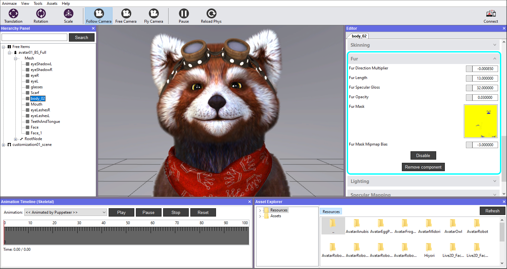
Mouth AO
The AnimazeShader has a simplistic, yet performing way to deal with the ambient occlusion of the mouth in all avatars. Based on some animation inputs, the diffuse is tinted dark, when closing the mouth, and bright, when opening the mouth.
The mouth interior usually has a different texture than the one outside of the mouth, therefore, at import, the Animaze system will identify the two materials and will break the mesh into two separate ones, each assigned with its own texture map.
This shader component applies solely to avatars, because it needs animation inputs. It can be added in the Editor Panel by pushing the button Add Component >> Fake Mouth AO.
Requirements:
- Mouth AO Texture – RGB texture.
- The texture holds the minimum brightness value in the red channel for when the avatar’s mouth is fully closed.
- The green channel is reserved for mouth fully opened.
- Blue channel it’s used for the tongue. It only contains a gradient where the base is the dark side.
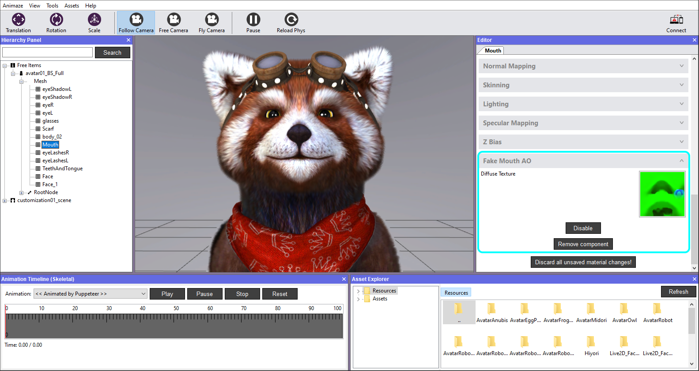
Shadows
In Animaze, the rendered surface can cast and receive shadows, each process being independent from each other.
- Casting shadows makes the rendered surface to be rendered through a shadow pass, building up a shadow map.
- Receiving shadows makes the AnimazeShader map the already rendered shadow map.
All 3 numerical values are used to get rid of the shadow mapping artifacts.
- Slope bias factor - scale factor that is used to create a variable depth offset for each polygon when rendering the shadow map
- Slope bias units - constant depth offset when rendering the shadow map;
- Depth bias - screen space value that is used to offset the object depth before comparing it to the shadow map value.
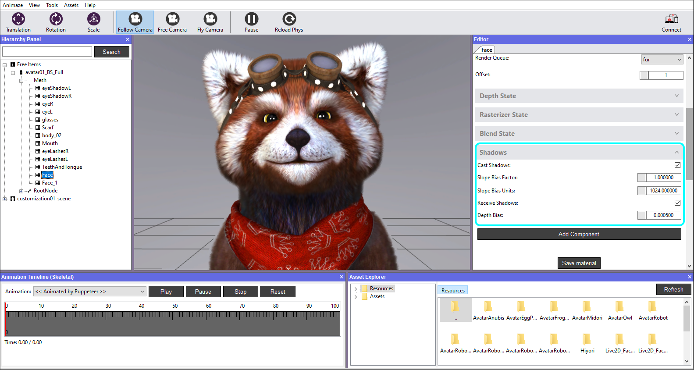
Z Bias
Renders the surface with a depth (Z) bias.
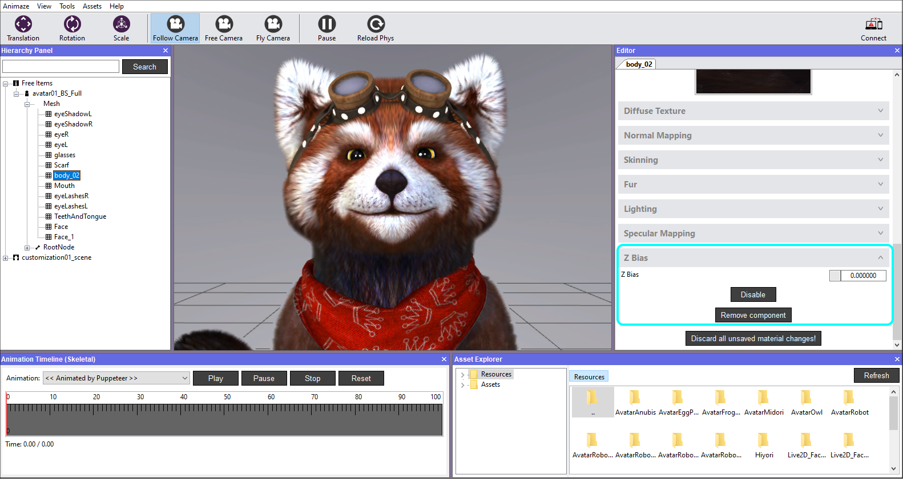
Cubism animated texture - Diffuse, Normal, Specular
Hybrid avatars use cubism textures, find out more about this type of avatars here.
You can assign live2D models as textures, enabling you to animate the Diffuse, Normal and Specular components.
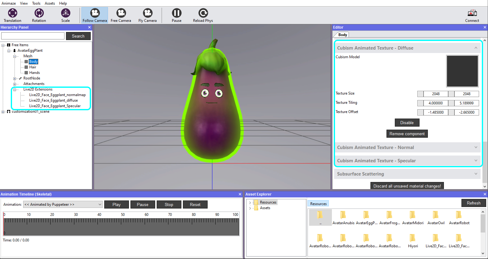
Cel Shading
Cel shading, or “toon shading”, is an intentional non-photorealistic rendering which is generally used to make 3d graphic content appear with flat colors.
A common theme of cel-shading which gives it that effective cartoon animation look is the use of bold outlines.
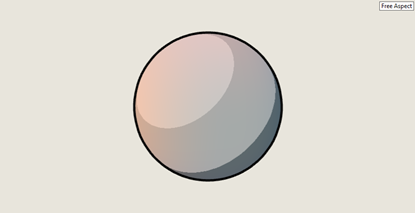
Cel shading is supported by two separate material components, the main difference being the amount of fine-tuning and detail control needed for a particular look:
- Dual-tone cel-shading that has a set of parameters to control Diffuse intensity, Specular highlights, and Edges.
- Multi-tone cel-shading that uses textures to control Diffuse intensity, Specular Highlights, and Edges in far more fine detail.
Edge outline
The Animaze shader implements two outline methods that can be used simultaneously:
- Dot based edge detection - the edges of the same surface are darkened. This method uses the dot product between the surface normal and light direction and decides based on a threshold if a pixel is on the outline of the rendered mesh or not.
- Expanded shell / Outline shell - the darkened outline is rendered on the exterior of the surface
Currently, both outline methods render a darkened outline, there is no support for tinted outlines.
Cel shading (no textures) - Dual Tone Cel Shading
- it can be added in Animaze Editor as mesh component
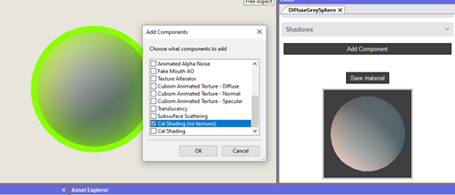
Diffuse Threshold - light intensity threshold that decides between applying 1st and 2nd tone diffuse intensities
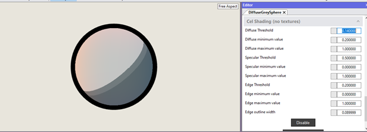
Diffuse minimum value - 1st tone diffuse intensity value
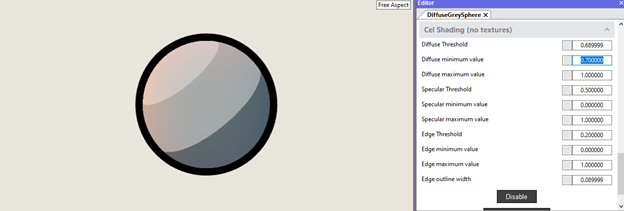
Diffuse maximum value - 2nd tone diffuse intensity value
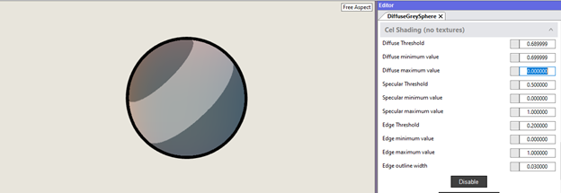
Specular Threshold - light intensity threshold that decides between applying 1st and 2nd tone specular intensities
Specular minimum value - 1st tone specular intensity value
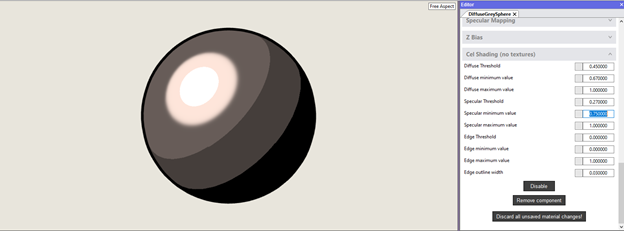
Specular maximum value - 2nd tone specular intensity value
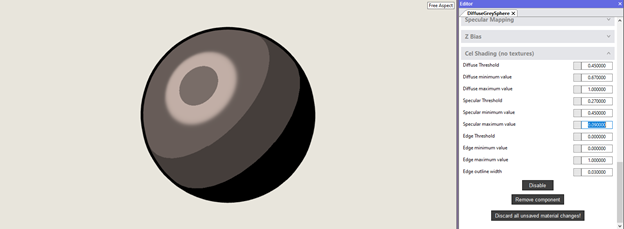
Edge Threshold - threshold used by the dot-based edge detection method
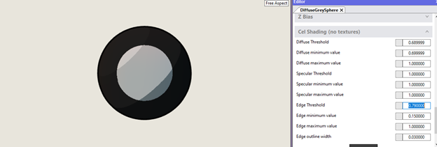
Edge minimum value - the intensity of the surface that is not the edge (factorizes the diffuse and specular tones)
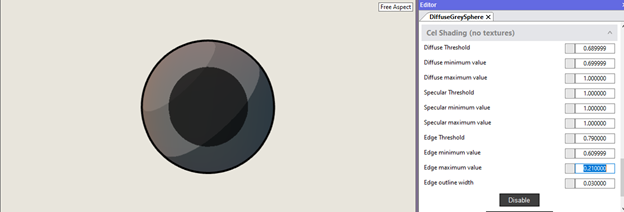
Edge outline width - used by the expanded shell/outline shell method. Controls the size of the outline. Currently, the edge is always black.
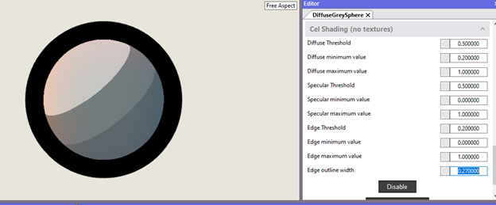
Cel shading w/ texture - Multi-tone cel-shading
Multi-tone cel-shading enables a finer detail of the rendered surface through use of various textures, that control the intensities of the diffuse, specular tone, and dot-based edge detection.
Diffuse Tones Texture
- The grayscale texture that maps light intensity (u coordinate) to diffuse tone intensity (texel color).
Texture used
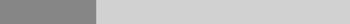
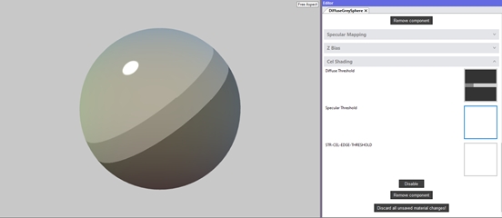
Texture used
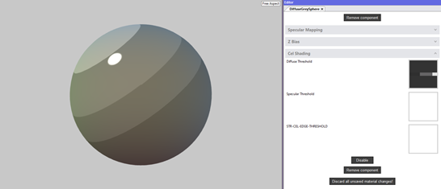
- Animaze shader samples a single row, so the size of the texture can be width x 1 pixel
- Supports fine details by choosing to build the texture with steps or gradients
Texture used
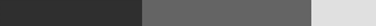
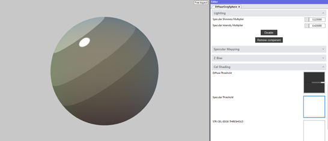
Texture used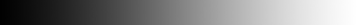
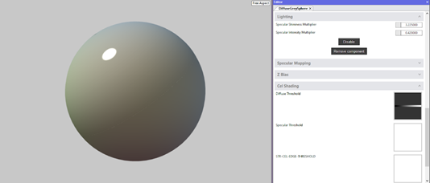
For maximum cel-shading effect make sure to use point filtering on texture (by default Animaze imports textures with linear filtering)
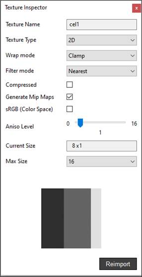
Specular Tones Texture
The grayscale texture that maps light intensity (u coordinate) to specular highlight tone intensity (texel color).
- Animaze shader samples a single row, so the size of the texture can be width x 1 pixel
- Supports fine details by choosing to build the texture with steps or gradients
Texture used
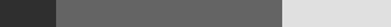
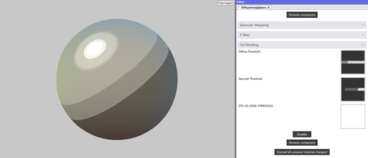
Texture used
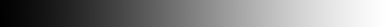
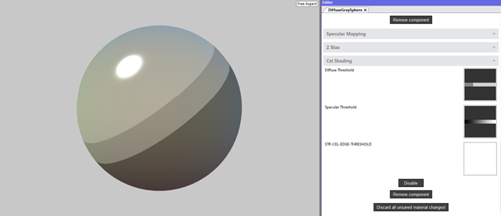
For maximum cel-shading effect make sure to use point filtering on texture (by default Animaze imports textures with linear filtering).
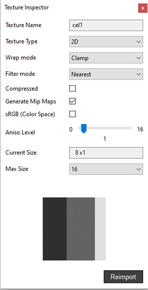
Edge Tones Texture - used for the dot-based edge detection
The grayscale texture that maps the dot product between surface normal and light direction (U coordinate) to edge tone intensity (texel color).
Texture used
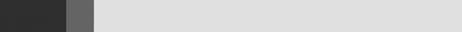
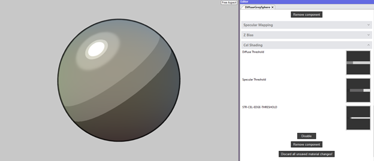
- Animaze shader samples a single row, so the size of the texture can be width x 1 pixel
- Supports fine details by choosing to build the texture with steps or gradients
Texture used
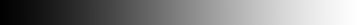
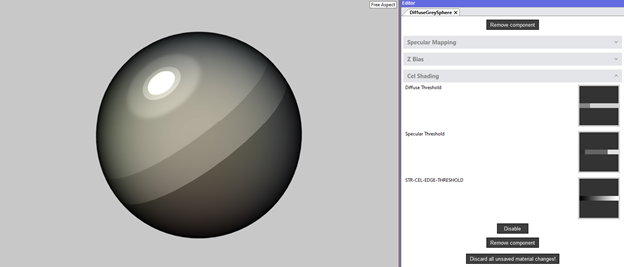
For maximum cel-shading effect make sure to use point filtering on texture (by default Animaze imports textures with linear filtering).
Edge outline width - used by the expanded shell/outline shell method. Controls the size of the outline. Currently, the edge is always black.
Additional components can be added to a selected mesh in the Editor Panel:
Specular Normal Mapping - an extra normal map used for reflection and specular, usually used for eyes meshes.
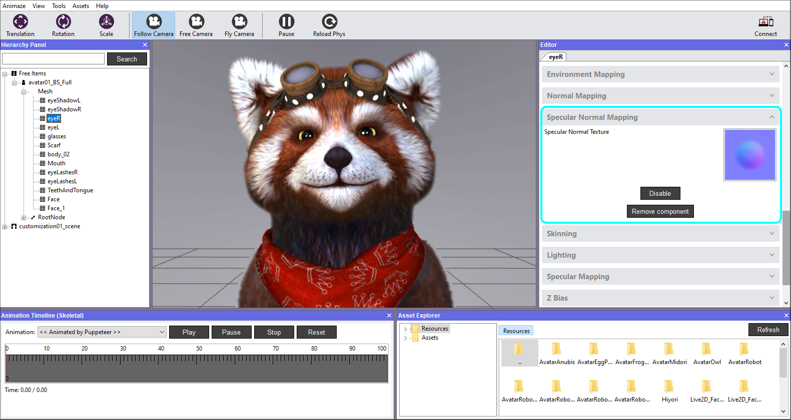
Static Color - a color component that overrides any other color texture on that mesh; usually useful for particle systems.
Texture Alterator - basically a gradient color mask used for dilation of the pupil which can be fed by animation data. In order to attain this, you must have a unique mapping for the eye, placed in its center. The mask with full intensity (white) must have the size of the pupil, while the gradient from white to black must have the size of the iris.
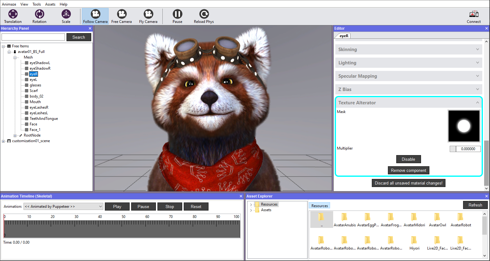
Customization Maps
Animaze supports 2 types of color customizations, and we are detailing them below:
Classic color customization
Allows full color control. Uses two textures: a Customization mask and a Desaturated Diffuse (grayscale) texture.
For example, for customizing the Crown King prop pictured below, which has the respective Diffuse texture, you will need to create:
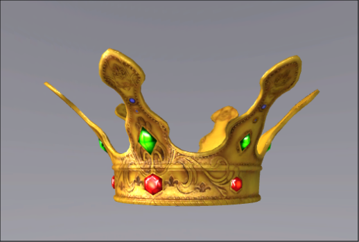
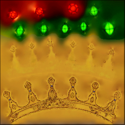
- a desaturated Diffuse texture - lighter in color because the colors from customization mask will be overlayed on this texture
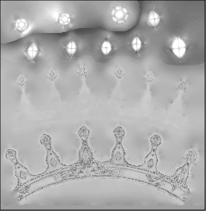
- a Custom mask RGBA texture with info on all channels - break the parts you want to color separately. The green part represents the green channel, red for the red channel, and blue for the blue channel.
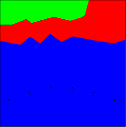
The next step is to add these customization maps to your item. Do so by following this tutorial.
Hue Shifter color customization -
Obtain more details and color variation, with less control over individual colors.
-
uses only an RGBA texture
-
the texture must contain a black alpha channel
-
The hue shifter makes method use of a color average that you need to calculate from the diffuse texture. Here is how:
-
open the diffuse texture in Photoshop
-
make a selection of each part from the customization mask on the RGB channels (in our case, the prop has the gold part and the jewels part)
-
go to FILTER > BLUR > AVERAGE
Select the color with color picker, afterwhich you need to copy the color code you obtain and add it in the Editor with prefix FF. See example below:
The code above is used further in Animaze Editor, to be set in the Customization Options, for Color & Average Color:
In the example above, we selected the golden part of the crown to show how it needs to be done. The same procedure must be ran for the parts of the diffuse texture that contain the jewels.
Add the Hue Shifter customization through Animaze Editor, as shown here.